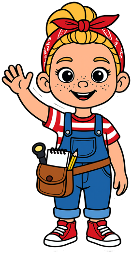

Avery's Toolbelt
A calm crayon cartoon for ages 3-6. One small, real discovery every episode, in the garage, the house, the kitchen and the reading room.
給 3–6 歲孩子的蠟筆卡通。每一集，一個小小的、真實的發現。
Every episode comes twice: a lively kids cut, and a calm narrated Story Time for bedtime.
Free coloring pages 免費著色頁
Drawn from the show itself, so your child colors the Avery they watch. Tap an episode to download its pages (PDF, US Letter).
Garage 車庫
The whole Garage coloring book (PDF) ・車庫著色本合訂本House 家
The whole House coloring book (PDF) ・家著色本合訂本Kitchen 廚房
The whole Kitchen coloring book (PDF) ・廚房著色本合訂本Reading Room 閱讀室
The whole Reading Room coloring book (PDF) ・閱讀室著色本合訂本For grown-ups 給大人
Stickers, tees and prints with Avery, Gus, Spec and Betsy, in our shop on Redbubble.
Shop Avery's Toolbelt